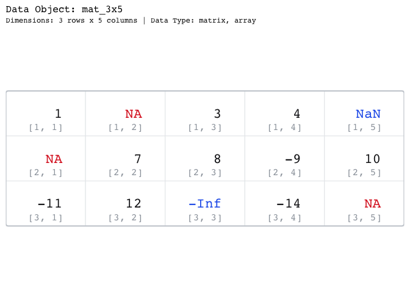
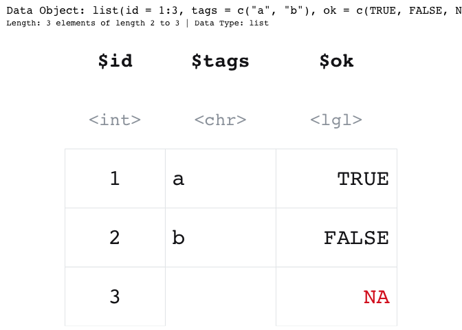

The goal of paintr is to draw different R data structures as pictures. Each value sits in its own cell, and under each cell paintr writes the expression you would type to reach it – so the drawing and the code are the same object. It is built for teaching, where the hard part is helping someone see the shape of the thing they are working with.
[!NOTE]
A previous version of the package was called drawr; however, another package with the same name was published on CRAN. As a result, the package was renamed to paintr.
Installation
You can install the development version of paintr from GitHub with:
A vector is a one-dimensional run of values, and that is how it draws. Under each cell is the expression you would type to reach it: [3] for the third value. Give the vector names and the label becomes the named accessor, ["mon"], because x["mon"] is now how you reach that value.
We can lay out its contents, label the cells with their [row, column] subscript, or highlight the cells that meet a condition – a comparison is a highlight mask.
# Show the cell indicespaint_matrix(mat_3x5, show_indices ="cell")

# Highlight cells over a specific valuepaint_matrix(mat_3x5, highlight_area =mat_3x5>4)
A data frame gets the richest default picture: a header of column names, the type of each column beneath it, and a row-name gutter when the row names are meaningful. Numbers show three significant figures, with trailing digits in grey.
A list is the flexible container: its elements can differ in length and type, so paintr draws each element as a column. A data frame is just a list whose elements share a length – break one length and the rectangle breaks with it.
paint_list(list(id =1:3, tags =c("a", "b"), ok =c(TRUE, FALSE, NA)))

Arrays
An array of three or more dimensions is a stack of matrices, and paint_array() lays that stack out as a row of blocks sharing one font size. The label under a cell is its full subscript, a genuine n-dimensional index.